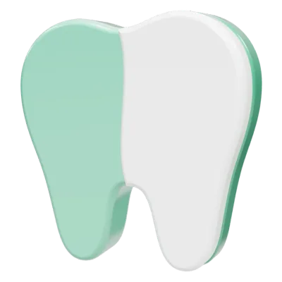
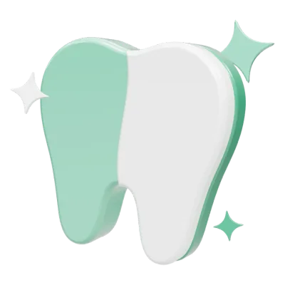
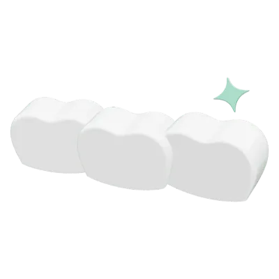
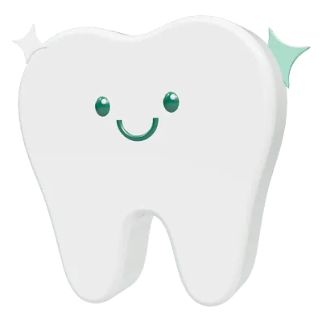

Fest & dauerhaft
Implantologie
Feste Zähne auf Implantaten: 3D-geplant, schonend gesetzt und mit Kronen aus dem Meisterlabor.

Ihre Praxis für Implantate, Zahnersatz, Kinder, Angstpatienten und Prophylaxe
Moderne Zahnmedizin und Zahnersatz aus unserem eigenen Meisterlabor. Persönlich, schonend und ganz in Ihrer Nähe.


Willkommen bei Klar Zahn
Wir verbinden moderne Zahnmedizin mit Zahntechnik aus dem eigenen Meisterlabor. Persönlich, schonend und mit Zeit für Ihre Fragen, damit Sie sich bei uns rundum wohlfühlen.
Unsere Leistungen
Von der Vorsorge über die Füllung bis zum Implantat: zehn Leistungsbereiche und ein eigenes Meisterlabor, abgestimmt aufeinander und auf Sie.
Feste Zähne auf Implantaten: 3D-geplant, schonend gesetzt und mit Kronen aus dem Meisterlabor.
Kronen, Brücken und Prothesen aus dem eigenen Meisterlabor, abgesichert mit 4 Jahren Garantie.

Füllungen, Inlays, Parodontitis-Therapie und Nervschutz: Wir reparieren punktgenau und erhalten Ihre eigenen Zähne.
Moderne Endodontie mit digitalem Röntgen und 3D-DVT: Wir retten entzündete Zähne, auch nach Zahnunfällen.
Spielerisch, geduldig und mehrsprachig: Vorsorge, Kreidezähne, Lückenhalter und Behandlung in Vollnarkose.

Deutsche Meisterzahntechnik unter unserem Dach: Farbnahme am Behandlungsstuhl, Reparatur am selben Tag, 4 Jahre Garantie.
Professionelle Zahnreinigung und schonendes Bleaching für gesunde, sichtbar hellere Zähne.
Veneers, Bleaching und unsichtbare Füllungen, abgestimmt mit unserer Zahntechnikermeisterin.
Knirscherschiene, CMD-Therapie, Schnarcherschiene und Aligner aus dem eigenen Labor.
Individueller Sportmundschutz aus dem Meisterlabor und schnelle Hilfe bei Zahnverletzungen im Sport.
Ihr erster Termin ist ein reines Beratungsgespräch im Besprechungszimmer: ohne Bohrer, ohne Wertung, auf Augenhöhe.
55 Themenseiten mit Ablauf, Kosten und Antworten auf häufige Fragen.
Zur ÜbersichtEigenes Meisterlabor
Kronen, Brücken, Prothesen und Implantatkronen fertigen wir selbst. Zahnarzt und Zahntechnikermeisterin stimmen sich direkt ab, ohne Umweg über ein externes Labor.
Unsere Zahntechnikermeisterin sieht Ihr Lächeln selbst, bei Tageslicht direkt am Behandlungsstuhl. So fügt sich der neue Zahn natürlich ein.
Kurze Abstimmungswege zwischen Behandlungsstuhl und Labor sorgen für Zahnersatz, der von Anfang an gut sitzt.
Ist eine Prothese beschädigt, reparieren wir sie im eigenen Haus, in den meisten Fällen noch am selben Tag.
Ein Team und feste Ansprechpartner, von der ersten Planung bis zum fertigen Zahn. Auf Neuanfertigungen geben wir 4 Jahre Garantie.
Ihr Weg zu uns
Rufen Sie uns an unter 06105 23604. Gemeinsam finden wir einen Termin, der in Ihren Alltag passt.
Wir untersuchen Ihre Zähne gründlich, erklären den Befund verständlich und besprechen alle Möglichkeiten mit Ihnen.
Wir behandeln schonend und nach Plan. Zahnersatz entsteht in unserem Meisterlabor, und auch danach bleiben wir für Sie da.
Angstpatienten
Viele Menschen meiden den Zahnarzt aus Angst, oft über Jahre. Bei Klar Zahn nehmen wir jeden Menschen genauso an, wie er ist: mit Zeit, Geduld und auf Wunsch im Dämmerschlaf oder in Vollnarkose.
Unser Versprechen: Ihr erster Termin ist ein reines Beratungsgespräch im Besprechungszimmer. Vollkommen ohne Bohrer, ohne Wertung, auf Augenhöhe.

Über uns
Herzlich willkommen bei Klar Zahn! Mir ist wichtig, dass Sie sich bei uns gut aufgehoben fühlen. Deshalb nehme ich mir Zeit für Ihre Fragen, erkläre jeden Behandlungsschritt verständlich und suche mit Ihnen die Lösung, die zu Ihren Wünschen passt.
Mit unserem eigenen Meisterlabor verbinden wir Zahnmedizin und Zahntechnik unter einem Dach. So entsteht Zahnersatz, der passt, hält und natürlich aussieht.
Blog
Neues aus unserer Praxis: Tipps und Antworten, verständlich erklärt von Zahnarzt Mikel Salloum und seinem Team.
Zum BlogHäufige Fragen
Antworten auf Fragen, die uns Patientinnen und Patienten oft stellen.
Ihre Frage ist nicht dabei? Rufen Sie uns an, wir beraten Sie gerne.
06105 23604Sprechen Sie uns einfach darauf an. Wir nehmen Ihre Sorgen ernst, erklären jeden Schritt in Ruhe und machen bei Bedarf Pausen. Auf Wunsch behandeln wir Sie im Dämmerschlaf oder in Vollnarkose, sodass Sie von der Behandlung kaum etwas mitbekommen.
Ja, sehr gerne. Wir erklären Kindern alles spielerisch und gehen behutsam vor, damit der Zahnarztbesuch eine gute Erfahrung wird. Bei größeren Behandlungen ist auch eine Behandlung in Vollnarkose möglich.
Zahnarzt und Zahntechnikermeisterin arbeiten im selben Haus. Die Zahnfarbe kann direkt bei Ihnen bestimmt werden, Anpassungen gehen schnell, und Reparaturen müssen nicht erst an ein externes Labor geschickt werden.
Für die meisten Menschen sind ein bis zwei Termine im Jahr sinnvoll. Wie oft es in Ihrem Fall empfehlenswert ist, besprechen wir gemeinsam bei Ihrer Kontrolluntersuchung.
Zum Beispiel, wenn Sie nachts mit den Zähnen knirschen oder pressen, morgens Kiefer- oder Kopfschmerzen haben oder Ihre Zähne Abnutzungsspuren zeigen. Eine individuell gefertigte Schiene schützt die Zähne und entlastet die Kiefergelenke.
Rufen Sie uns während der Sprechzeiten unter 06105 23604 an. Wir bemühen uns, Ihnen so schnell wie möglich zu helfen. Außerhalb der Sprechzeiten wenden Sie sich bitte an den zahnärztlichen Notdienst.
Kontakt & Anfahrt
Opelstraße 2 in Mörfelden-Walldorf, im Kreis Groß-Gerau. Gut erreichbar aus Groß-Gerau, Langen, Dreieich, Weiterstadt und Büttelborn.
06105 23604 Kontakt@klar-zahn.de| Montag | 09:00 – 13:00 · 14:00 – 18:00 |
|---|---|
| Dienstag | 09:00 – 13:00 · 14:00 – 18:00 |
| Mittwoch | 12:00 – 19:00 |
| Donnerstag | 09:00 – 13:00 · 14:00 – 18:00 |
| Freitag | 09:00 – 13:00 |
| Samstag | geschlossen |
| Sonntag | geschlossen |
Termine auch nach Vereinbarung.
Patientinnen und Patienten kommen zu uns aus dem ganzen Kreis Groß-Gerau und dem Rhein-Main-Gebiet. Planen Sie Ihre Route: